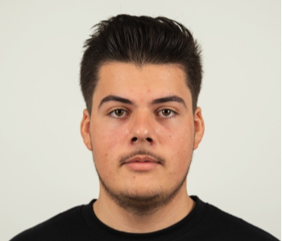

📋 Organisation & Terrain
Suivi d'électriciens câbleurs
Participation aux réunions de suivi
Estimation des temps d'intervention
Chiffrage / Budget
Coordination sur ligne de production
Technicien autonome en bureau d'études chez ARMOR GROUP, je réalise moi-même les études électriques, la programmation automate/IHM et j'accompagne les électriciens lors des mises en service. Mon objectif au CESI : acquérir les compétences de gestion de projet globale (cahier des charges, planification, management transverse) pour devenir ingénieur.

Actuellement en alternance chez ARMOR GROUP au sein du BE Automatisme & Électricité, j'interviens de la conception jusqu'à la mise en service sur le terrain. Je réalise moi-même les schémas sous SEE Electrical, le développement IHM et la programmation sous TIA Portal, et je suis chargé d'accompagner les électriciens câbleurs lors des arrêts techniques (ex: en zones ATEX).
Aujourd'hui, j'ai une solide maîtrise de mon cœur de métier technique. Intégrer le cursus Ingénieur CESI est pour moi l'étape nécessaire pour franchir un cap : passer du rôle d'exécutant technique autonome à celui de véritable chef de projet capable de rédiger un cahier des charges, de planifier un chantier (Gantt) et de coordonner plusieurs corps de métiers (mécanique, électricité, production).
Participation active aux projets de modernisation (Retrofit), conception complète (schémas électriques, IHM, TIA Portal), suivi de budget, accompagnement terrain des électriciens et mise en service sur lignes de production.
Spécialisation en Automatisme et Informatique Industrielle (AII). Apprentissage poussé en systèmes embarqués, réseaux industriels et méthodologie technique.
Sciences et Technologies de l'Industrie et du Développement Durable (mention Bien). Acquisition de solides bases transversales en ingénierie, mécanique et énergie.
Participation à la modernisation d'une zone ATEX (budget cible ~45k€) supervisé par un automaticien. Autonomie totale sur le terrain en semaine 1 pour guider les électriciens, réalisation TIA Portal et IHM.
Intégration d'un système de mesure en temps réel (KIMO/DEBIMO). Pilotage de 2 électriciens sur site, tests en réel, correction de problèmes et déploiement avec blocs UDT standardisés.
Projet technique de conception complète (Hardware & Software) pour le déverrouillage d'un système robotisé industriel. Preuve de concept, routage PCB et intégration C/Arduino.
Conception hardware d'un PCB de détection et programmation d'un microcontrôleur SAMD21. Gestion des délais, assemblage et tests d'intégration complets.